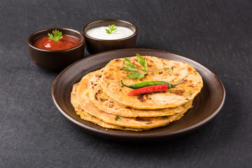

Preparation Of Aloo Paratha

Ingredients
- 250 gm whole wheat flour
- Pinch of salt
- 1 cup water
- 50 ml oil
- 500 gm potatoes
- 20 gm ginger garlic paste
- 75 gm onions
- 5 gm green chillies
- 5 gm chilli powder
- Oil for frying
Process
- Make a soft dough with the specified ingredients.
- Divide the dough into balls, as per the required size.
- Chop the onions, green chillies and the coriander leaves. Then boil the potatoes; remove the skin and mash.
- Add the rest of the ingredients and mix well. Take each portion of the dough, flatten it on palm.
- Stuff the filling in the dough and roll into balls. With a rolling pin, flatten the balls into 1/2" thick round parathas.
- Grease a pan with a little oil and heat on a medium flame.
- Cook the parathas until both sides are golden and cooked through.